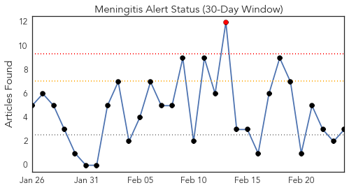
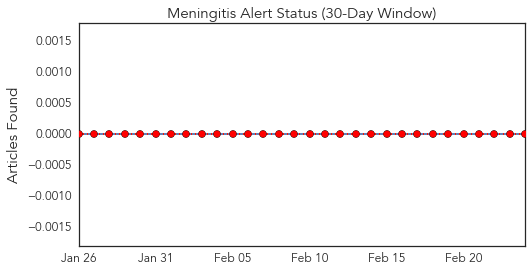
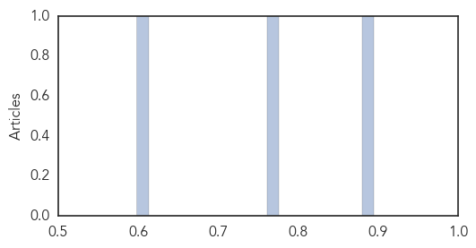
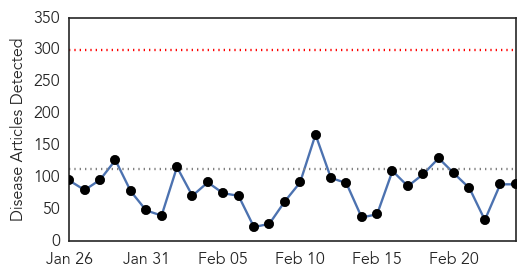
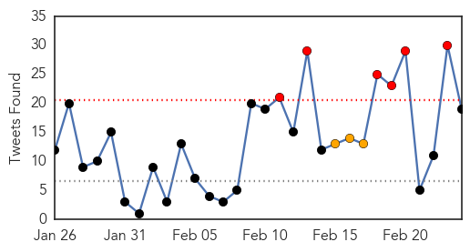
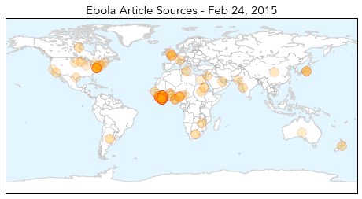
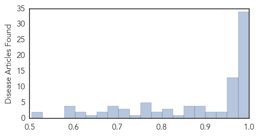

Meningitis
30-Day Web Trend
1 alerts, 0 warnings

30-Day Twitter Trend
0 alerts, 0 warnings

Article Locations

Article Confidences
Top Articles:
Top Tweets:
-
No tweets found for Feb 24, 2015
Ebola
30-Day Web Trend
0 alerts, 0 warnings

30-Day Twitter Trend
6 alerts, 3 warnings

Article Locations
Article Confidences
Top Articles:
- 1.000
- Six challenges to stamping out Ebola
- 1.000
- Liberia Lifts Curfew, Opens Borders After Curbing Ebola
- 1.000
- Ebola Rebounding In Sierra Leone? Virus Transmissions Still ‘Widespread’ In Freetown
- 0.999
- Ebola Drug in Guinea Helps Some, Stirs Debate on Broader Use
- 0.999
- THE STREET JOURNALTHE STREET JOURNAL
- 0.998
- Fear of Ebola's sexual transmission drives abstinence, panic
- 0.998
- Ebola drug’s early results promising, researchers report
- 0.998
- Ebola drug in Guinea helps some, stirs debate on broader use
- 0.998
- What Happened With The Ebola Epidemic Since You Stopped Paying Attention
- 0.998
- Ebola crisis: Liberia to open borders as infection falls
- 0.996
- First Ebola survivors talk of hope and despair in Guinea
- 0.996
- WHO Regional Director for Africa Dr Matshidiso Moeti visits Sierra Leone
- 0.996
- Liberians enjoy return to normal life
- 0.996
- Quick test for Ebola
- 0.995
- EurekAlert! Science News
- 0.995
- Interview: UN official urges vigilance as Ebola situation improves
- 0.995
- Ebola Fight is not yet over, it stops with us « Awoko Newspaper
- 0.994
- Fighting Ebola in Sierra Leone
- 0.993
- Paper-based test can detect Ebola in minutes
- 0.993
- New WHO Regional Director Commends Sierra Leone in the Fight against Ebola
- 0.992
- Three words of advice for WHO Africa's new chief
- 0.992
- Japanese flu drug shows some promise in first tests against Ebola in West Africa, study finds
- 0.991
- Ebola drug tests show improved chances of survival when administered early
- 0.990
- Limited promise in early results from Ebola drug trial
- 0.986
- 10 SA health workers on Ebola mission in Sierra Leone
- 0.983
- MN Ebola Monitoring
- 0.983
- Quarantines Without Food Threaten Ebola Response in Sierra Leone
- 0.982
- Limited promise in early results from Ebola drug trial
- 0.982
- Ebola Vaccine Stigma Impacts Measles and Polio Campaigns
- 0.982
- News and Press Release Distribution
- 0.980
- Mourners remember Conaway as political giant
- 0.980
- Hogan to announce agricultural initiative
- 0.980
- Obama proposes tougher consumer rules to protect IRA investors
- 0.976
- Preliminary results of the JIKI clinical trial to test the efficacy of favipiravir in reducing mortality in individuals infected by Ebola virus in Guinea.
- 0.973
- US Health officials Visit Liberia, Guinea
- 0.971
- Ebola’s stigma recalls leprosy
- 0.971
- Missionary Who Contracted Ebola Returns to Liberia
- 0.971
- Obasanjo visits Ebola-hit countries
- 0.970
- Remember Ebola’s orphans, but don’t forget all the other affected children - Sierra Leone
- 0.968
- Preliminary results in Ebola drug trial released
- 0.967
- Dead Que. man tests negative for Ebola
- 0.967
- President Koroma lauds UNMEER, commends outgoing Crisis Manager
- 0.963
- Perfect Science
- 0.960
- HIV Care Slammed by Ebola
- 0.960
- Kailahun People Beg MSF to Stay
- 0.960
- Medicago wins contract to develop Ebola treatments
- 0.956
- Mitigating the Impact of Ebola in Potential Hot Zones: A Proof-of-Concept Approach to Help Decisionmakers Prepare for High-Risk Scenarios Outside Guinea, Liberia, and Sierra Leone
- 0.945
- Border Communities educated on Ebola
- 0.938
- UPDATE 1-Medicago wins contract to develop Ebola treatments
- 0.922
- PHIL donates to Ebola affected communities
Showing top 50 articles...
Top Tweets:
- 0.912
- Ebola Update: 23539 confirmed probable and suspected cases reported in 3 most affected countries with 9541 deaths. EbolaResponse
- 0.857
- RT: To custodians of health: Health behaviour during outbreaks & after are different. Educate citizens when it's hot. EBOLA…
- 0.843
- Ending the Ebola Outbreak - New York Times http://t.co/5Gqk4UiRkp ebola EVD
- 0.834
- MIT Lab Develops Rapid Diagnostic Tests For Ebola And Dengue - Forbes http://t.co/CqAdHh3a6q ebola EVD
- 0.824
- RT: @EbolaAlert Ebola most go out of saleone now
- 0.809
- Health systems would have to be beefed up to prevent such level of casualties as seen in the Ebola outbreak. EbolaChat
- 0.806
- EBOLACHAT How Ebola outbreak complicated Maternal & Child Health in West Africa is one areas that needs deeper insights. NextSteps
- 0.768
- Ebola Drug Shows Some Promise in First Tests in West Africa - ABC News http://t.co/2jZGplvZnS ebola EVD
- 0.717
- Simple paper strip can diagnose Ebola and other fevers within 10 minutes - Medical Xpress http://t.co/4rpGrODbLF ebola EVD
- 0.699
- RT: One of six Serbs working in SierraLeone has tested positive for Ebola according to the Serbian consul in Freetown Adon…
- 0.657
- Liberia's Ebola human waste dilemma - BBC News http://t.co/07iKoM3Qg1 ebola EVD
- 0.609
- Many caveats on promising Ebola drug trial - Science AAAS http://t.co/Mxas9BdmF9 ebola EVD
- 0.604
- Fear of Ebola's sexual transmission drives abstinence panic - Reuters http://t.co/yiSc1sWnTt ebola EVD
- 0.604
- Fear of Ebola's sexual transmission drives abstinence panic - Reuters http://t.co/AHcO97q1QW ebola EVD
- 0.580
- RT: .@WHOAFRO Dr Moeti goes 2 SierraLeone 2 c first hand what can do 2 strengthen efforts to get Ebola cases to 0 http://t.…
- 0.563
- RT: There are a number of challenges facing Ebola control writes. One of the wildcards is rain. http://t…
- 0.520
- Trials & tribulations: INSERM's favipiravir ebola treatment trial http://t.co/xQSerljaN3. As if ebola clinical trials aren't hard enough!
- 0.516
- Audio. In West Africa Fewer New Ebola Cases But Epidemic Still Uncontained Via http://t.co/dqUrtlsGB2
- 0.511
- Estimating the basic reproductive ratio for the Ebola outbreak in Liberia and SierraLeone http://t.co/T8q0aiVpOe